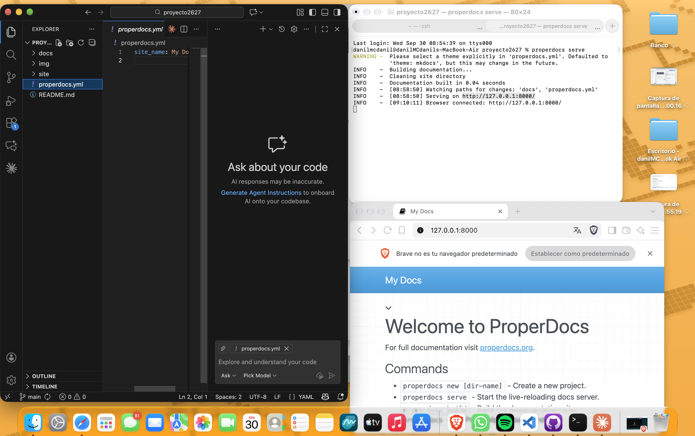
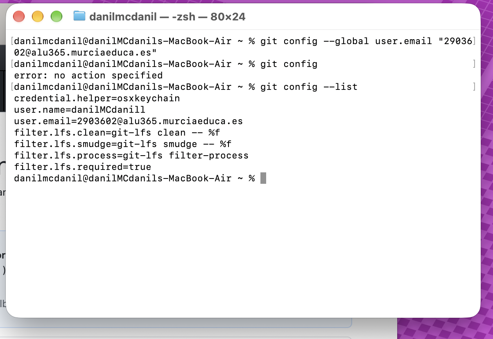
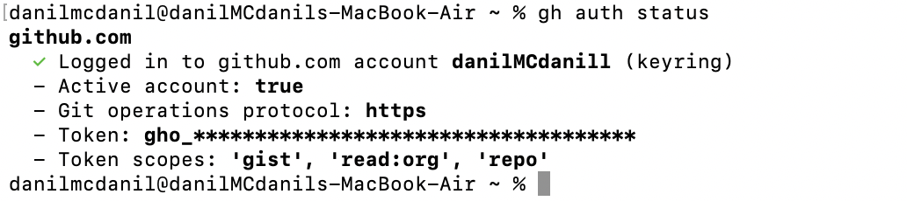
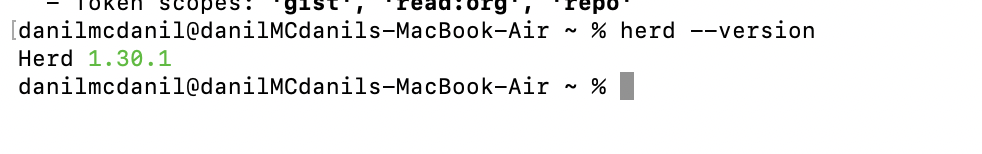
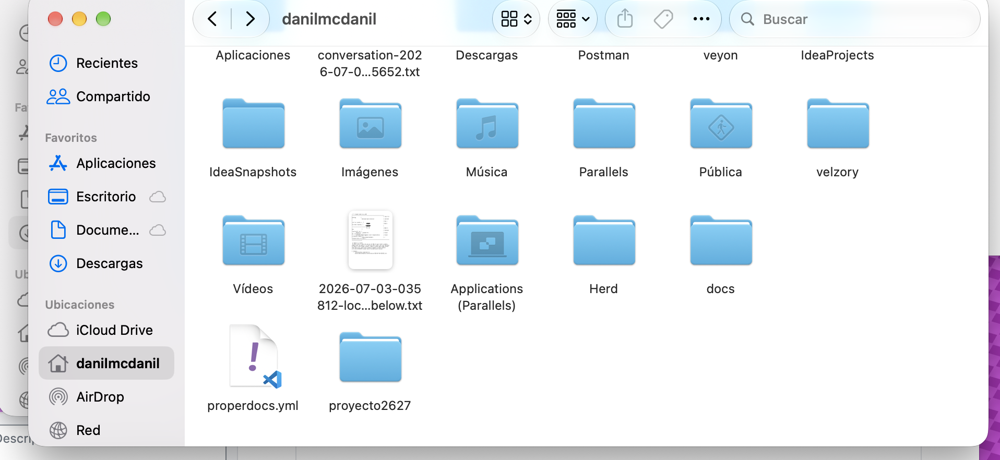
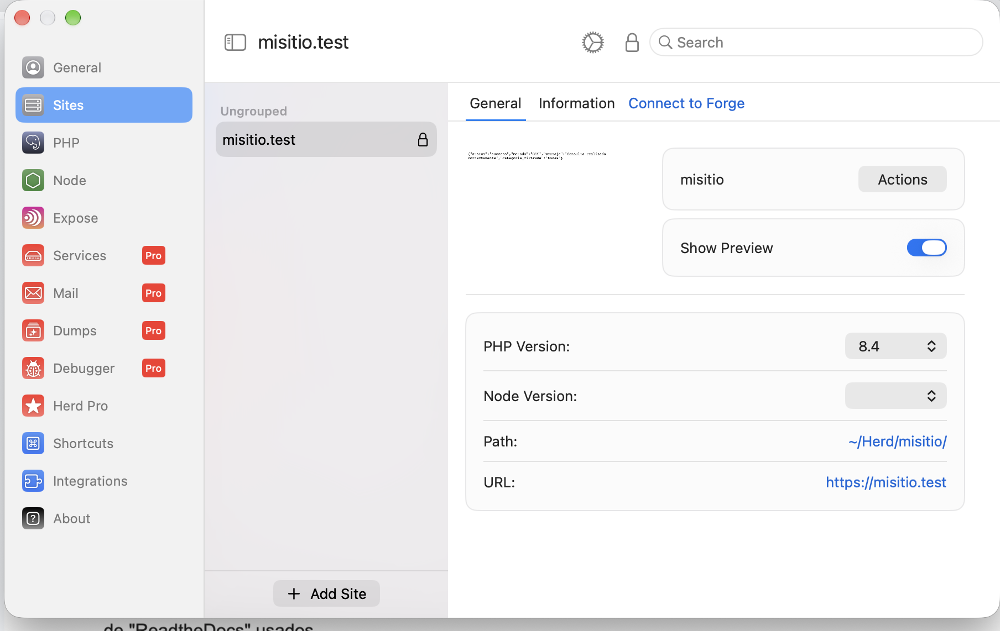
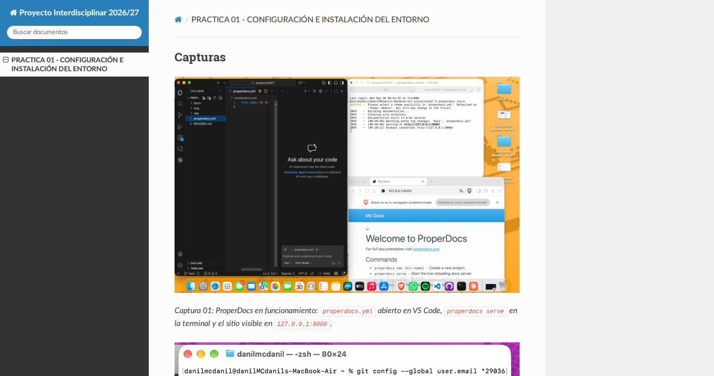
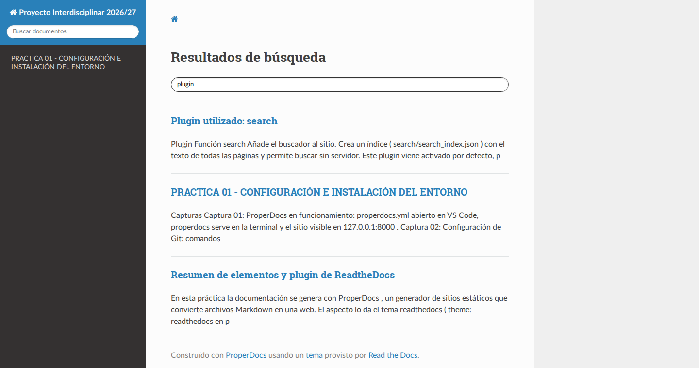

Capturas

Captura 01: ProperDocs en funcionamiento: properdocs.yml abierto en VS Code, properdocs serve en la terminal y el sitio visible en 127.0.0.1:8000.

Captura 02: Configuración de Git: comandos git config y listado con el usuario y el email.

Captura 03: Comprobación de la sesión de GitHub con gh auth status.

Captura 04: Comprobación de la instalación de Herd con herd --version (1.30.1).

Captura 05: Carpeta personal en Finder con Herd, docs, proyecto2627 y properdocs.yml.

Captura 06: Herd, sección Sites: sitio misitio.test con PHP 8.4 y ruta ~/Herd/misitio/.
Resumen de elementos y plugin de ReadtheDocs
En esta práctica la documentación se genera con ProperDocs, un generador de sitios estáticos que convierte archivos Markdown en una web. El aspecto lo da el tema readthedocs (theme: readthedocs en properdocs.yml), que ofrece una barra lateral de navegación, un buscador integrado y un diseño que se adapta al tamaño de la pantalla. Con locale: es los textos del tema (buscador, botones anterior/siguiente) aparecen en español.

Captura 07: Sitio generado con el tema readthedocs: barra lateral con el menú definido en nav, cuadro de búsqueda arriba a la izquierda, ruta de navegación y contenido a la derecha.
Elementos utilizados
| Elemento | Dónde se configura | Qué hace |
|---|---|---|
site_name |
properdocs.yml |
Título del sitio, que se muestra en la cabecera de la barra lateral |
nav |
properdocs.yml |
Define el menú lateral y el orden de las páginas |
theme (readthedocs, locale: es) |
properdocs.yml |
Tema con barra lateral y buscador, con la interfaz en español |
markdown_extensions (pymdownx.*) |
properdocs.yml |
Amplían el Markdown: bloques de código (superfences, highlight), avisos (blocks.admonition), listas de tareas (tasklist), teclas (keys), texto marcado (mark), etc. |
extra_javascript |
properdocs.yml |
Carga MathJax (fórmulas matemáticas) y js/copy-button.js, un script propio para copiar el código |
extra_css |
properdocs.yml |
Añade una hoja de estilos propia guardada en docs/css/ |
Carpeta docs/ |
Proyecto | Páginas en Markdown y recursos: img/ (capturas), css/ y js/ |
Carpeta site/ |
Se genera sola | HTML estático resultante de ejecutar properdocs build |
Plugin utilizado: search
| Plugin | Función |
|---|---|
search |
Añade el buscador al sitio. Crea un índice (search/search_index.json) con el texto de todas las páginas y permite buscar sin servidor. |
Este plugin viene activado por defecto, por eso no aparece escrito en properdocs.yml. Si se quisiera declarar de forma explícita bastaría con añadir:
plugins:
- search

Captura 08: El plugin search en funcionamiento: al escribir en el cuadro de búsqueda aparecen las páginas y secciones que contienen el texto.